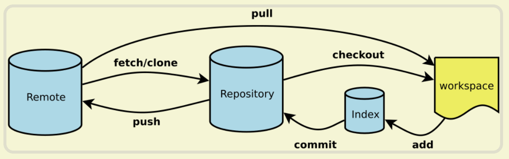
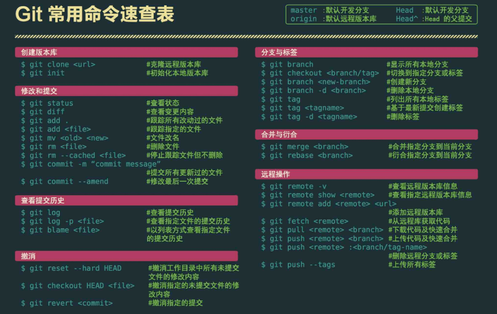

说说Git常用的命令有哪些？
参考答案
一、前言
git 的操作可以通过命令的形式如执行，日常使用就如下图6个命令即可

实际上，如果想要熟练使用，超过60多个命令需要了解，下面则介绍下常见的的git 命令
二、有哪些
配置
Git 自带一个 git config 的工具来帮助设置控制 Git 外观和行为的配置变量，在我们安装完git之后，第一件事就是设置你的用户名和邮件地址
后续每一个提交都会使用这些信息，它们会写入到你的每一次提交中，不可更改
设置提交代码时的用户信息命令如下：
- git config [--global] user.name "[name]"
- git config [--global] user.email "[email address]"
启动
一个git项目的初始有两个途径，分别是：
- git init [project-name]：创建或在当前目录初始化一个git代码库
- git clone url：下载一个项目和它的整个代码历史
日常基本操作
在日常工作中，代码常用的基本操作如下：
- git init 初始化仓库，默认为 master 分支
- git add . 提交全部文件修改到缓存区
- git add <具体某个文件路径+全名> 提交某些文件到缓存区
- git diff 查看当前代码 add后，会 add 哪些内容
- git diff --staged查看现在 commit 提交后，会提交哪些内容
- git status 查看当前分支状态
- git pull <远程仓库名> <远程分支名> 拉取远程仓库的分支与本地当前分支合并
- git pull <远程仓库名> <远程分支名>:<本地分支名> 拉取远程仓库的分支与本地某个分支合并
- git commit -m "<注释>" 提交代码到本地仓库，并写提交注释
- git commit -v 提交时显示所有diff信息
- git commit --amend [file1] [file2] 重做上一次commit，并包括指定文件的新变化
关于提交信息的格式，可以遵循以下的规则：
- feat: 新特性，添加功能
- fix: 修改 bug
- refactor: 代码重构
- docs: 文档修改
- style: 代码格式修改, 注意不是 css 修改
- test: 测试用例修改
- chore: 其他修改, 比如构建流程, 依赖管理
分支操作
- git branch 查看本地所有分支
- git branch -r 查看远程所有分支
- git branch -a 查看本地和远程所有分支
- git merge <分支名> 合并分支
- git merge --abort 合并分支出现冲突时，取消合并，一切回到合并前的状态
- git branch <新分支名> 基于当前分支，新建一个分支
- git checkout --orphan <新分支名> 新建一个空分支（会保留之前分支的所有文件）
- git branch -D <分支名> 删除本地某个分支
- git push <远程库名> :<分支名> 删除远程某个分支
- git branch <新分支名称> <提交ID> 从提交历史恢复某个删掉的某个分支
- git branch -m <原分支名> <新分支名> 分支更名
- git checkout <分支名> 切换到本地某个分支
- git checkout <远程库名>/<分支名> 切换到线上某个分支
- git checkout -b <新分支名> 把基于当前分支新建分支，并切换为这个分支
远程同步
远程操作常见的命令：
- git fetch [remote] 下载远程仓库的所有变动
- git remote -v 显示所有远程仓库
- git pull [remote] [branch] 拉取远程仓库的分支与本地当前分支合并
- git fetch 获取线上最新版信息记录，不合并
- git push [remote] [branch] 上传本地指定分支到远程仓库
- git push [remote] --force 强行推送当前分支到远程仓库，即使有冲突
- git push [remote] --all 推送所有分支到远程仓库
撤销
- git checkout [file] 恢复暂存区的指定文件到工作区
- git checkout [commit] [file] 恢复某个commit的指定文件到暂存区和工作区
- git checkout . 恢复暂存区的所有文件到工作区
- git reset [commit] 重置当前分支的指针为指定commit，同时重置暂存区，但工作区不变
- git reset --hard 重置暂存区与工作区，与上一次commit保持一致
- git reset [file] 重置暂存区的指定文件，与上一次commit保持一致，但工作区不变
- git revert [commit] 后者的所有变化都将被前者抵消，并且应用到当前分支
reset：真实硬性回滚，目标版本后面的提交记录全部丢失了<br><br>revert：同样回滚，这个回滚操作相当于一个提价，目标版本后面的提交记录也全部都有
存储操作
你正在进行项目中某一部分的工作，里面的东西处于一个比较杂乱的状态，而你想转到其他分支上进行一些工作，但又不想提交这些杂乱的代码，这时候可以将代码进行存储
- git stash 暂时将未提交的变化移除
- git stash pop 取出储藏中最后存入的工作状态进行恢复，会删除储藏
- git stash list 查看所有储藏中的工作
- git stash apply <储藏的名称> 取出储藏中对应的工作状态进行恢复，不会删除储藏
- git stash clear 清空所有储藏中的工作
- git stash drop <储藏的名称> 删除对应的某个储藏
三、总结
git常用命令速查表如下所示：
